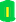
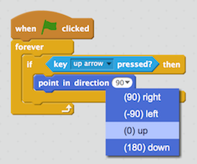
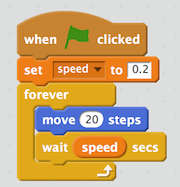

Snake Game in Scratch
Snake Game
Learn It
- In this project you are going to create the well known snake game.
- The game play is as follow:
- The snake moves continuously on the game board
- The player uses the arrow keys to direct the direction of the snake's movement
- A mouse is placed on the board at a random location
- If the snake eats a mouse, two things happen: the player scores one and the snake grows longer
- When the snake has grown to certain length, there is danger that the snake may move cross its own body. If this happens, the game is over
We are going to code the above steps one at a time in Scratch
Code It - The snake moves continuously on the game board
- Create a new Scratch project.Delete the cat sptite by right clicking on it then delete.
- Next, we add a snake sprite. The sprite has two costumes, a head and a body. Right click on each image below to download to your homedrive. You can make your own later.
 - Follow the steps below to create the snake sprite with two costumes.
- Now, lets add
some scriptsto make the snake movecontinuously.Continuous movementmeans using a loop. The scripts for this are very simple for now.
Code It - The player uses the arrow keys to direct the direction of the snake's movement
- Next we need to enable to player to control which way the snake moves.
- This is accomplished by using the four arrows.
- Each time an arrow key is pressed, an event is
triggered, then the snake will point the way the player wants it to move. - During the game play, the event of arrow key pressing needs to be
continuouslymonitored. Again, we will use aforever loop - You need to add code for other three arrow keys inside the loop.
- Test your code to make sure you can control which way the snake moves.If you are stuck, check that your code looks like this.
{kind=link}
Code It - create variables to keep score and the speed of the snake movement
- The snake movement is bit too fast. The computer is working as hard as it can to run your loop on move the snake 20 steps each loop.
- Lets create a variable called
speedso that we can slow down the movement a bit but later we can also change the variable to make the game harder. - The speed is going to store the waiting time between each loop.
- We need to give it a value (number of seconds) at the start of the game. I used 0.2 seconds. You can use 0.1 second to make it move a bit faster. 
- Test your code and make sure everything is still working.
- Create another variable called
scoreto be used later and set it to 0 after green flag is clicked.
Code It - A mouse is placed on the board at a random location
- To get on making our game, we are going to use the mouse sprite from the Scratch site. Once you finish making this game, you can always go back to change the sprite to what you like.
- Lets add code so the new sprite, mouse can be placed on
a random location within the board. The layout and dimension of the game board in Scratch is like this:- The maximum on Y axis is 240, the minimum on X axis is -240.
- The maximum on Y axis is 180, the minimum on Y axis is -180.
- We want the whole image of the mouse to be placed inside the border, so we need to pick a location that is somewhere between -230 and 230 on X axis and between -165 and 165 on Y axis.
- To pick a random location, we need to use the random block from Scratch's Operators block.
- Make sure you have click on the mouse sprite and then go to its script window. The mouse need to go to a random location at the start of the game (when the geen flag is clicked).
- Test your code to make sure it works.
Code It - The snake eats the mouse and score increase by 1
- The eating happens when the snake 'touch" the mouse.
- Once eaten, the mouse needs to move to a new random location and the score increases by 1.
- This eating, moving to a new location and increasing score need to be monitored
continuouslyduring the game play. All those three actions should be inside aforever loop. - make sure you are working on the mouse sprite script window.
- Test again and make sure it all works.
Code It - The snake eats the mouse and it grows by one size
- This is probably the most difficult script to understand. So lets go over it slowly. Watch the following finished game carefully you will find the added body parts of the snake follow the head in both movement and directions.
- In scratch, you can create a clone or many clones to do exactly what we want.
- Lets create some clones to follow the head.
- Those clones should have the costume of the body, NOT the head. So after being created as a clone, they should switch costume to the body. So add the following code block to your snake sprite.
- Test your code now you will find:
- there are too many clones being created
- if the costume being switched to body, the head no longer showed up.
- To correct the costume problem, we just need to switch the costume to head at the start of the game.
- To correct the too many clones problem, we need to delete some clones at regular intervals. But how many clones to keep? Well, each time the player scores, there should be a clone added to the snake.
- The clone has been created every 0.2 seconds (the speed) continuously. To maintain the same number of clones as the score, the time we need to wait before delete extra clones is:
the number of clones x the speed Since the Number of clones is the same as the score, we can just use the following formular to work out the waiting time to delete clones: score x speed - Test your code, it should now keep tracking of score and the snake should grow after eating a mouse.
Code It - Game Over
- The game is over when the snake's body has crossed with itself.
- When this happens, we need to broadcast a game over message, so other sprites can act accordingly.
- It is much easier if you have a body costume that has a different colour from the head. Add the following code and pick the body colour.
- Since the body is a clone, we need to add some code to the clone on the snake sprite script window.
- What heppens to the snake when the game is over? We can hide it and stop its scripts. BUT if you hide it, make sure you also add show at the start of the game.
- Do the same for the mouse's script when the mouse receives GameOver message.
Code It - Improve the game by letting the snake to teleport
- The game is working. But it can be improved. When the snake hits the four borders, it simply stucks there.
- If we can add some code so that the snake comes from the opposite side when it hits the border (teleport), it will make the game play smoother and more enjoyable.
- To let the snake teleport, we need to
continuously detectwhen it hits the border:- the X axis maximum when the snake is moving right
- the X axis minimum when the snake is moving left
- the Y axis maximum when the snake is moving up
- the Y axis minimum when the snake is moving down
- Can you add other three conditions when the snake is moving left, up and down?
Badge It
Silver
- Follow the instructions given above, producing a working game without the ability to teleport the snake.
Gold
- Finish the teleport code so that the snake can teleport from all 4 sides.
- Create a "Game over" sprite.
- Add script for it, so when the game is over, it shows up and hides at the start of a new game.
Platinum
- A start new game screen so that players can:
- click a button to start a new game
- As the snake grows longer, it moves faster